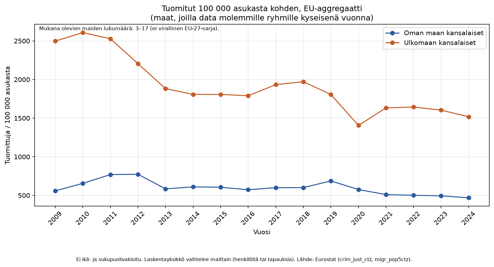
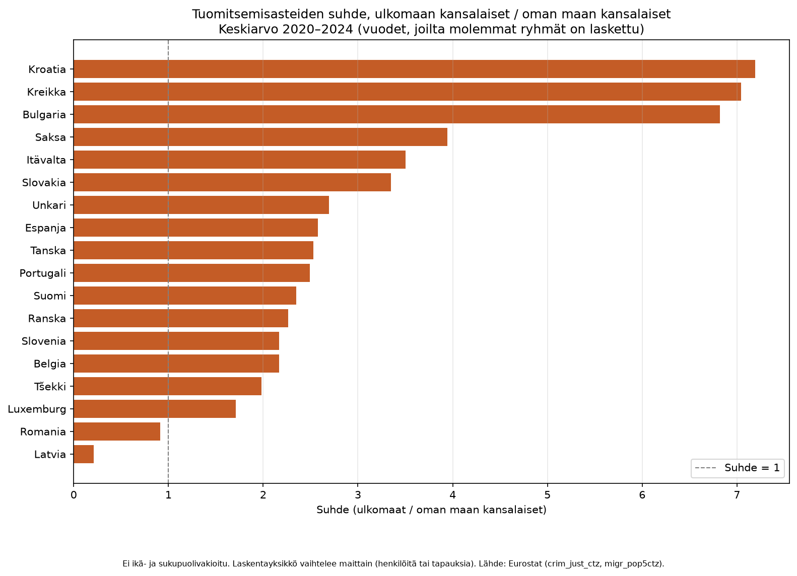
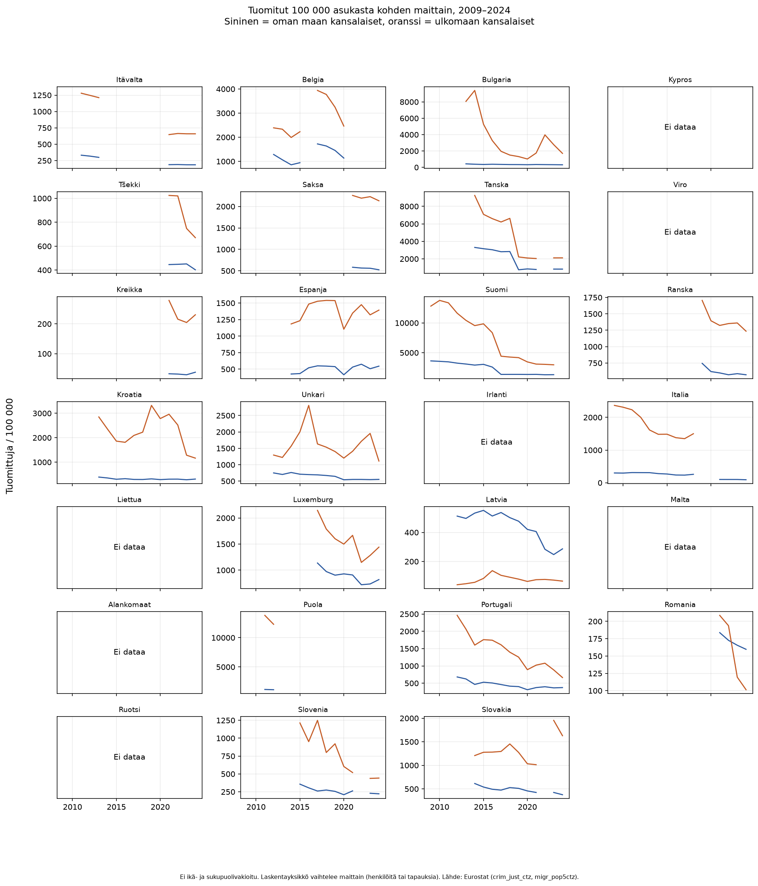
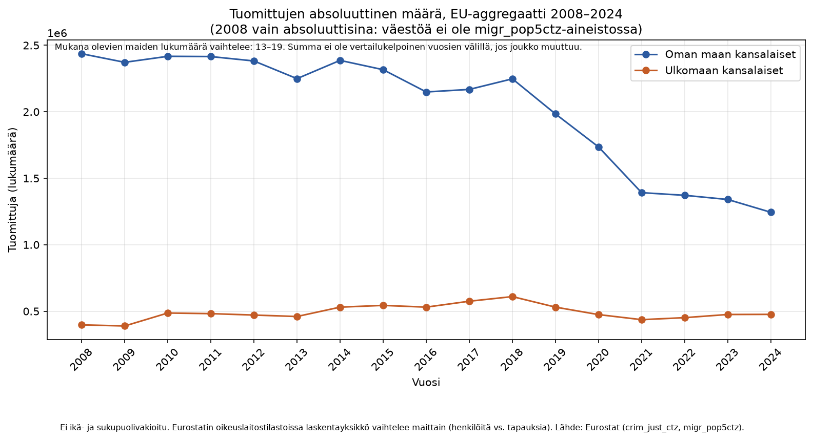

Miten EU-luku on laskettu
Kullekin vuodelle summataan vain ne EU-maat, joilla on data molemmille ryhmille kyseisenä vuonna. Se ei ole virallinen EU-27-luku eikä mediaani. Mukana olevien maiden joukko vaihtuu, joten viiva ei ole saman maan joukon kehitys.




Ei ikä- ja sukupuolivakioitu. Laskentayksikkö vaihtelee maittain. Lähde: Eurostat.